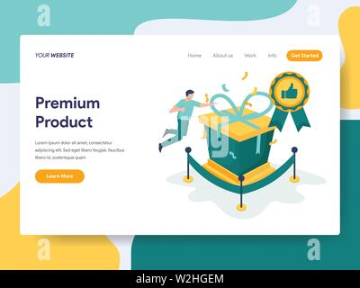
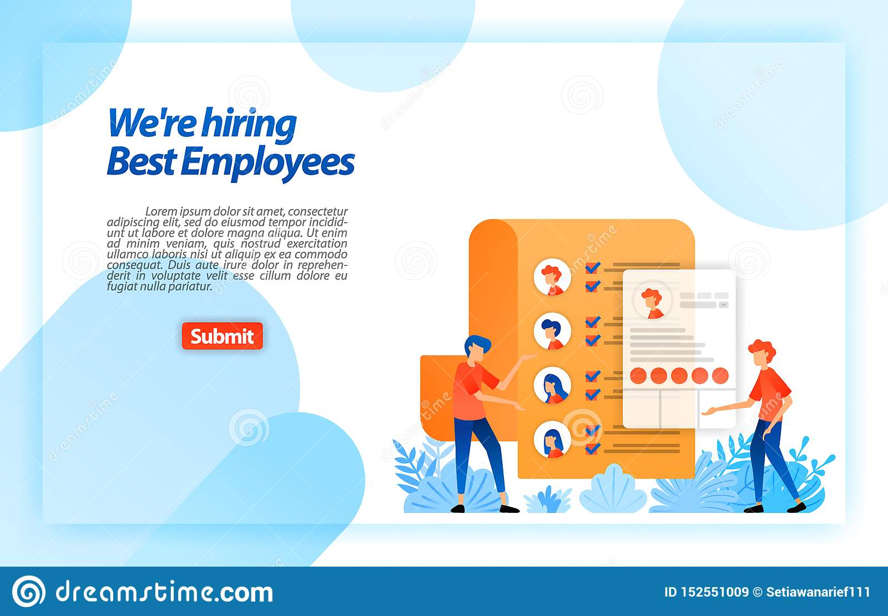

Tentang

Nama saya surya wibowo. Sebuah nama sederhana yang memiliki arti “Perjuangan meng wibawa kan suatu negara”. Teman-teman biasa memanggil saya surya. Saya lahir di Pasuruan, pada tanggal 16 juli 2001. Saya anak pertama dari dua bersaudara dan sekarang tinggal di daerah Pasuruan.
Berdasarkan filosofi sansakerta, kata surya juga berasal dari kalimat cahaya, yang merupakan kalimat sakral dan luhur karena mengandung nilai ajaran dewa piramida. surya artinya cahaya atau matahari. matahari adalah segala sesuatu yang berada di alam semesta yaitu di langit dan atmosfer.
Sejarah
Mengenai kepribadian, saya memiliki sifat yang periang, ramah, dan baik hati karena saya senang membantu teman dan senang bergaul. Saya juga tipe orang yang mau bekerja keras dalam setiap pekerjaan yang sedang saya jalani agar pekerjaan tersebut bisa menghasilkan sesuatu yang maksimal. Namun, saya juga memiliki beberapa sifat yang buruk. Saya manja dan masih sering egois. Sampai sekarang, saya berusaha mengurangi sifat-sifat buruk itu dengan berusaha belajar mandiri.
Saya memiliki hobi membaca buku-buku pemrograman,Dan disinilah sejarah saya dimulai waktu luang saya digunakan untuk menulis code, Bermain Game, dan nonton berita teknologi
Dari kegiatan tersebut saya tertarik menekuni dunia pemrograman web developer dan saya sangat tertarik menjadi seorang frontend developer saya kedepannya ingin menjadi seorang software engginer yang internasional.
Project
Sejak tahun 2020, saya memulai membuat project kecil yang utamanya project tersebut ingin supaya bisa bermanfaat bagi orang sekitar dan utamanya untuk masyarakat disini supaya membantu mempermudah pekerjaan masyarakat
project ini juga kedepannya bakal menjadikan bahan evalusai buat saya.
Premium product

Premium product adalah suatu website yang sangat bermanfaat dan website ini digunakan untuk melakukan transaki berbagai macam product yang berkualitas dan sangat terjamin keaslian produk tersebut dan terjamin
Enternshif zone

website ini adalah website kedua saya dan website ini sangat berguna untuk melakukan transaksi berbagai macam barang dan website ini sangat mengutamakan keamanan dan responsibiliti konsumen terhadap pembeli.